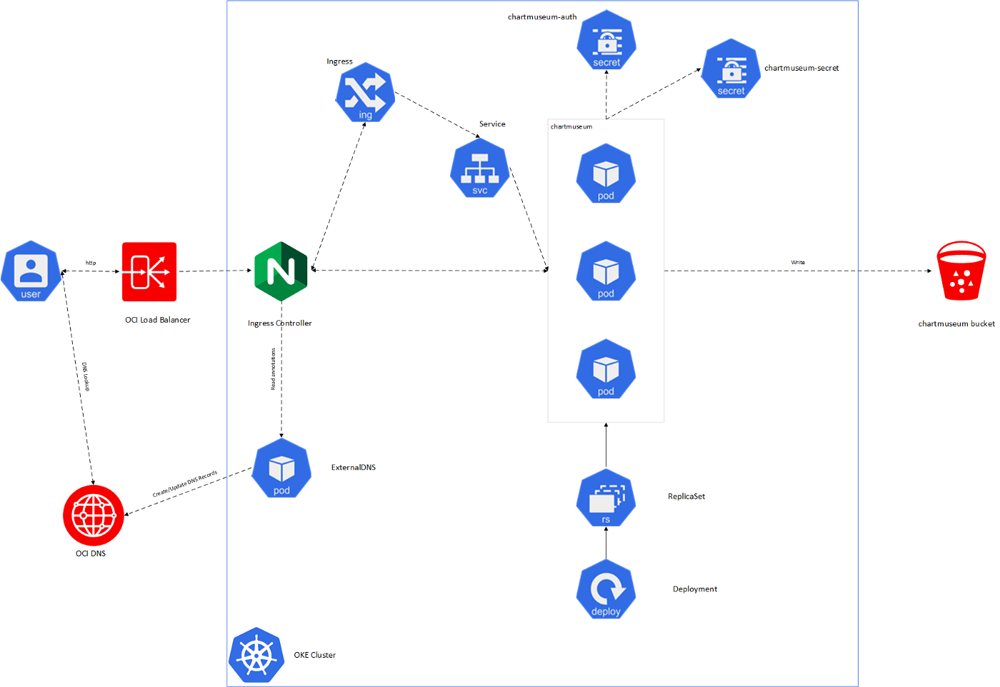
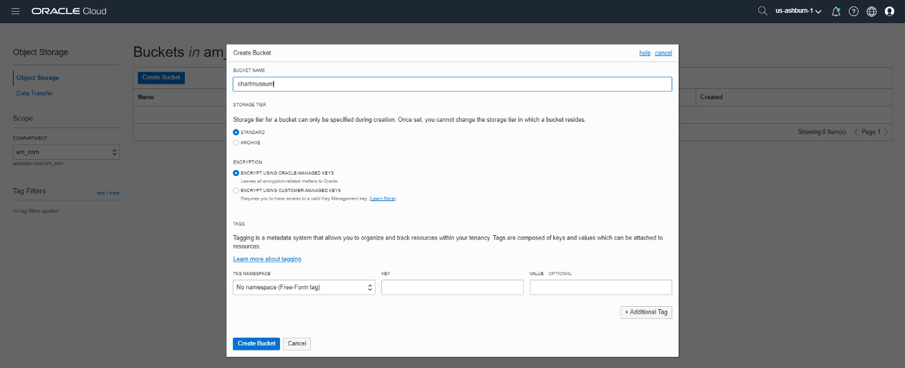
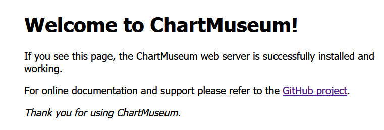
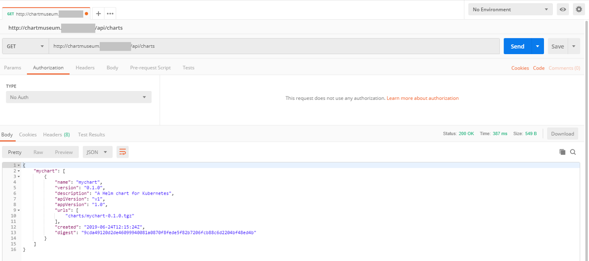
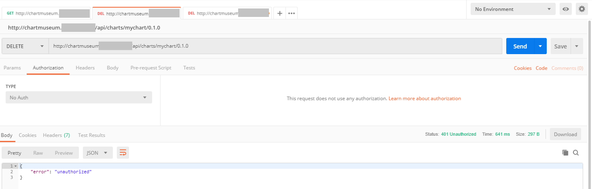
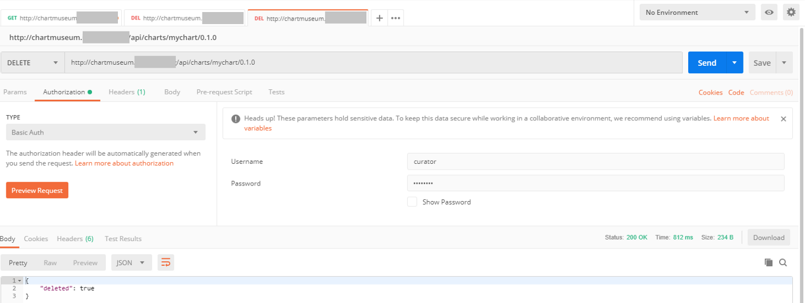
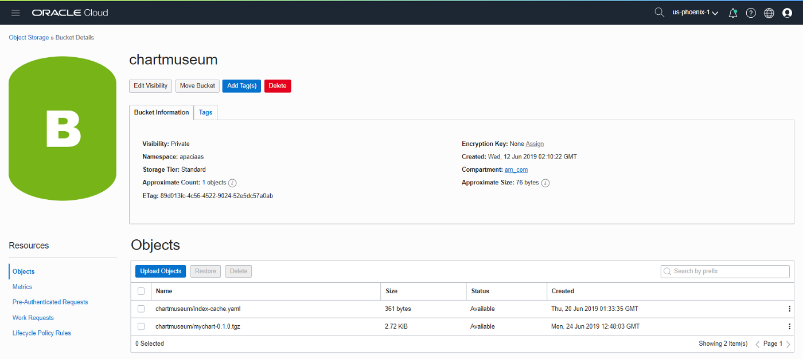
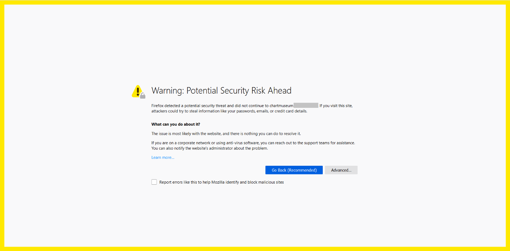
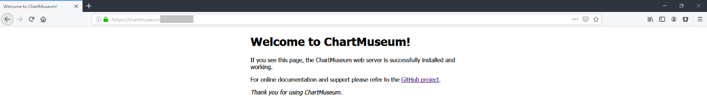

<div class="initial-content">
  <div id="main" role="main">

  <article class="page has-sidebar" itemscope itemtype="https://schema.org/CreativeWork">
    <meta itemprop="headline" content="Hosting a private Helm Repository on OCI (Oracle Cloud Infrastructure) with ChartMuseum and OCI Object Storage">
    
    <meta itemprop="datePublished" content="2021-12-15T12:21:00+00:00">
    


    <header>
      <h1 id="page-title" class="page__title" itemprop="headline">Hosting a private Helm Repository on OCI (Oracle Cloud Infrastructure) with ChartMuseum and OCI Object Storage
</h1>
      


    </header>

    <section class="page__content" itemprop="text">
      

        <p>In <a href="extending-terraform-oke-helm-chart.md">another article</a>, we deployed a helm chart (Redis) into Oracle Container Engine (OKE) which we pulled from the stable repository.</p>

<p>We’ve <a href="oci-iac-framework/getting-started-with-oci-step-4-app-infrastructure.md">already described</a> how to host the container images privately on Oracle Registry Service (OCIR). What if we want to do the same for our helm charts?</p>

<p>Fortunately, there is a solution for that too.</p>

<p>In this article we’ll introduce you to chartmuseum, an open source Helm Chart Repository server with support for various cloud storage backends, including OCI Object Storage.</p>

<h2 id="additional-information">Additional information</h2>

<p>By default, the stable repo is hosted at <a href="https://kubernetes-charts.storage.googleapis.com/">here</a>.</p>

<p>We can also manually add the <a href="https://github.com/helm/charts/tree/master/incubator">incubator repository</a> if we want to:</p>

<div class="language-console highlighter-rouge"><div class="highlight"><pre class="highlight"><code><span class="go">helm repo add incubator https://kubernetes-charts-incubator.storage.googleapis.com/
</span></code></pre></div></div>

<p>This should respond with something similar to:</p>

<div class="language-console highlighter-rouge"><div class="highlight"><pre class="highlight"><code><span class="go">"incubator" has been added to your repositories
</span></code></pre></div></div>

<p>The container images in those repositories are also publicly available (for example, the default image for redis is <code class="language-plaintext highlighter-rouge">bitnami/redis</code> in bitnami’s container redis repository on Dockerhub).</p>

<h2 id="prerequisites">Prerequisites</h2>

<ul>
  <li>An Oracle Cloud Infrastructure Free Tier account. <a href="https://signup.cloud.oracle.com/?language=en&amp;sourceType=:ow:de:te::::RC_WWMK211116P00260:DotBuildGetStarted&amp;intcmp=:ow:de:te::::RC_WWMK211116P00260:DotBuildGetStarted">Start for Free</a>.</li>
  <li>A MacOS, Linux, or Windows computer with <code class="language-plaintext highlighter-rouge">ssh</code> support installed.</li>
  <li><a href="https://docs.oracle.com/en-us/iaas/Content/API/Concepts/cloudshellintro.htm">OCI Cloud Shell</a> - It provides a great platform for quickly working with Terraform as well as a host of other OCI interfaces and tools.</li>
</ul>

<h2 id="getting-started">Getting started</h2>

<p>In this tutorial, we’ll be using the <a href="https://github.com/oracle-terraform-modules/terraform-oci-oke">terraform-oci-oke</a> project to provision the OKE cluster. For more details, see <a href="https://medium.com/oracledevs/changing-load-balancer-shape-in-oracle-container-engine-oke-and-updating-dns-with-external-dns-7064f15cf600?source=friends_link&amp;sk=3f539e6f43c3e973492ede35877d15d8">this post</a> on provisioning OKE using Terraform.</p>

<p>Below is an architecture of what we’ll build:</p>

<picture class="">
                <source srcset="assets/helm-network-diagram.png 1x" />
                
            </picture>

<h2 id="install-nginx-controller">Install nginx-controller</h2>

<ol>
  <li>
    <p><strong>Install DNS -</strong> Follow <a href="https://medium.com/oracledevs/changing-load-balancer-shape-in-oracle-container-engine-oke-and-updating-dns-with-external-dns-7064f15cf600?source=friends_link&amp;sk=3f539e6f43c3e973492ede35877d15d8">this post</a> to install <a href="https://github.com/kubernetes-incubator/external-dns">ExternalDNS</a>.</p>
  </li>
  <li>
    <p><strong>nginx -</strong> Install <a href="https://kubernetes.github.io/ingress-nginx/">nginx-controller</a>.<br />
We’ll use this to access chartmuseum later.</p>

    <p>In the command below, replace <code class="language-plaintext highlighter-rouge">chartmuseum.acme.com</code> by your preferred hostname:</p>

    <div class="language-console highlighter-rouge"><div class="highlight"><pre class="highlight"><code><span class="go">   helm install --name nginxcontroller stable/nginx-ingress \
   --set controller.name=controller \
   --set defaultBackend.enabled=true \
   --set defaultBackend.name=defaultbackend \
   --set rbac.create=true \
   --set controller.service.annotations."external-dns\.alpha\.kubernetes\.io/hostname"=chartmuseum.acme.com
</span></code></pre></div>    </div>
  </li>
  <li>
    <p>Verify that an OCI Load Balancer has been created and a DNS <code class="language-plaintext highlighter-rouge">A</code> record has been inserted in the DNS Zone.</p>
  </li>
</ol>

<h2 id="create-oci-bucket">Create OCI Bucket</h2>

<p>In the OCI Console, navigate to <strong>Object Storage</strong> and create a bucket called <em>chartmuseum</em>:</p>

<picture class="">
                <source srcset="assets/helm-chartmuseum-bucket.png 1x" />
                
            </picture>

<h2 id="deploy-chartmuseum">Deploy <em>chartmuseum</em></h2>

<p>We want a similar experience to the stable or incubator repos:</p>

<ul>
  <li>anonymous <code class="language-plaintext highlighter-rouge">GET</code> but protected <code class="language-plaintext highlighter-rouge">POST</code> requests</li>
  <li>Basic Auth for authentication purposes</li>
</ul>

<h3 id="create-secrets">Create secrets</h3>

<p>We’ll need to create 2 secrets to accomplish this.</p>

<ol>
  <li>
    <p><strong>secret 1 -</strong> Let’s start by creating a secret to hold the Basic Auth <em>username</em> and <em>password</em>:</p>

    <div class="language-console highlighter-rouge"><div class="highlight"><pre class="highlight"><code><span class="go">   kubectl create secret generic chartmuseum-auth --from-literal=user=curator --from-literal=pass=password
</span></code></pre></div>    </div>
  </li>
  <li>
    <p><strong>secret 2 -</strong> You’ll also need to create a secret that will allow chartmuseum to communicate with the OCI APIs.</p>

    <ol>
      <li>
        <p>Temporarily, copy your API keys to the bastion. You can also do this locally if you have <code class="language-plaintext highlighter-rouge">kubectl</code> and local access to the kubeconfig.</p>
      </li>
      <li>
        <p>Create a file <code class="language-plaintext highlighter-rouge">config</code> and enter your user and tenancy OCIDs, api key fingerprint, and region value. The <code class="language-plaintext highlighter-rouge">key_file</code> value has to be <code class="language-plaintext highlighter-rouge">/home/chartmuseum/.oci/oci.key</code>.</p>

        <div class="language-console highlighter-rouge"><div class="highlight"><pre class="highlight"><code><span class="go">[DEFAULT]                                           
</span><span class="gp">user=&lt;USER_OCID&gt;</span><span class="w">                                                                                    
</span><span class="gp">fingerprint=&lt;API_KEY_FINGERPRINT&gt;</span><span class="w">
</span><span class="go">key_file=/home/chartmuseum/.oci/oci.key                         
</span><span class="gp">tenancy=&lt;TENANCY_OCID&gt;</span><span class="w">
</span><span class="gp">region=&lt;REGION&gt;</span><span class="w">
</span></code></pre></div>        </div>
      </li>
      <li>
        <p>Create the secret using appropriate absolute or relative path to the config file and private API key.</p>

        <div class="language-console highlighter-rouge"><div class="highlight"><pre class="highlight"><code><span class="go">   kubectl create secret generic chartmuseum-secret --from-file=config="/path/to/config" --from-file=key_file="/path/to/apikey.pem"
</span></code></pre></div>        </div>
      </li>
    </ol>
  </li>
</ol>

<h3 id="install-chartmuseum">Install <em>chartmuseum</em></h3>

<p>With the secrets created, we’re ready to start deploying chartmuseum.</p>

<ol>
  <li>
    <p>Download the chartmuseum values file:</p>

    <div class="language-console highlighter-rouge"><div class="highlight"><pre class="highlight"><code><span class="go">   curl -o values.yaml https://raw.githubusercontent.com/helm/charts/master/stable/chartmuseum/values.yaml
</span></code></pre></div>    </div>
  </li>
  <li>
    <p>Edit the <code class="language-plaintext highlighter-rouge">values.yaml</code> file and replace the parameters as follows:</p>

    <div class="language-console highlighter-rouge"><div class="highlight"><pre class="highlight"><code><span class="go">   env:
     open:
       STORAGE: oracle
</span><span class="gp">       STORAGE_ORACLE_COMPARTMENTID:&lt;COMPARTMENT_OCID&gt;</span><span class="w">
</span><span class="go">       STORAGE_ORACLE_BUCKET: chartmuseum
       STORAGE_ORACLE_PREFIX: chartmuseum
       DISABLE_API: false
       AUTH_ANONYMOUS_GET: true
       AUTH_REALM: chartmuseumexistingSecret: chartmuseum-auth
   existingSecretMappings:
     BASIC_AUTH_USER: user
     BASIC_AUTH_PASS: passingress:
     enabled: true
     labels:
       dns: "ocidns"annotations:
       kubernetes.io/ingress.class: nginxhosts:
      - name: chartmuseum.acme.com
        path: /
        tls: falseoracle:
     secret:
       enabled: true
       name: chartmuseum-secret
       config: config
       key_file: key_file
</span></code></pre></div>    </div>
  </li>
  <li>
    <p>Install chartmuseum:</p>

    <div class="language-console highlighter-rouge"><div class="highlight"><pre class="highlight"><code><span class="go">   helm install --name=chartmuseum -f values.yaml stable/chartmuseum
</span></code></pre></div>    </div>
  </li>
  <li>
    <p>Wait for the pod to run:</p>

    <div class="language-console highlighter-rouge"><div class="highlight"><pre class="highlight"><code><span class="go">   kubectl get pods -w
</span></code></pre></div>    </div>

    <p>This should give output similar to:</p>

    <div class="language-console highlighter-rouge"><div class="highlight"><pre class="highlight"><code><span class="go">   NAME                                                            READY   STATUS    RESTARTS   AGE                                                                      
   chartmuseum-chartmuseum-748c8dbbd8-7nctc                        1/1     Running   0          5m20s
</span></code></pre></div>    </div>
  </li>
</ol>

<h3 id="verify-installation">Verify installation</h3>

<ol>
  <li>
    <p>Verify that the ingress has been created:</p>

    <div class="language-console highlighter-rouge"><div class="highlight"><pre class="highlight"><code><span class="go">   kubectl get ing
</span></code></pre></div>    </div>

    <p>This should give output similar to:</p>

    <div class="language-console highlighter-rouge"><div class="highlight"><pre class="highlight"><code><span class="go">   NAME                      HOSTS                       ADDRESS   PORTS   AGE                                                                                           
   chartmuseum-chartmuseum   chartmuseum.acme.com             80      7m9s
</span></code></pre></div>    </div>
  </li>
  <li>
    <p>And that it also maps to the <em>chartmuseum</em> service:</p>

    <div class="language-console highlighter-rouge"><div class="highlight"><pre class="highlight"><code><span class="go">k describe ing 
</span></code></pre></div>    </div>

    <p>This should give output similar to:</p>

    <div class="language-console highlighter-rouge"><div class="highlight"><pre class="highlight"><code><span class="go">   chartmuseum-chartmuseum                                                                                                     
   Name:             chartmuseum-chartmuseum                                                                                                                             
   Namespace:        default                                                                                                                                             
   Address:                                                                                                                                                              
   Default backend:  default-http-backend:80 ()                                                                                                                    
   Rules:                                                                                                                                                                
     Host                       Path  Backends                                                                                                                           
     ----                       ----  --------                                                                                                                           
     chartmuseum.acme.com                                                                                                                                           
                                /   chartmuseum-chartmuseum:8080 ()                                                                                                
   Annotations:                                                                                                                                                          
     kubernetes.io/ingress.class:  nginx                                                                                                                                 
   Events:                                                                                                                                                               
     Type    Reason  Age    From                      Message                                                                                                            
     ----    ------  ----   ----                      -------                                                                                                            
     Normal  CREATE  6m20s  nginx-ingress-controller  Ingress default/chartmuseum-chartmuseum                                                                            
     Normal  UPDATE  5m31s  nginx-ingress-controller  Ingress default/chartmuseum-chartmuseum
</span></code></pre></div>    </div>
  </li>
  <li>
    <p>Verify whether you can <a href="http://chartmuseum.acme.com">reach <em>chartmuseum</em> publicly</a> with your browser.</p>

    <picture class="">
             <source srcset="assets/helm-chartmuseum-welcome-msg.png 1x" />
             
         </picture>
  </li>
</ol>

<h3 id="pushing-a-chart-to-chartmuseum">Pushing a chart to chartmuseum</h3>

<ol>
  <li>
    <p>Install the helm <code class="language-plaintext highlighter-rouge">push</code> plugin:</p>

    <div class="language-console highlighter-rouge"><div class="highlight"><pre class="highlight"><code><span class="go">   helm plugin install https://github.com/chartmuseum/helm-push
</span></code></pre></div>    </div>
  </li>
  <li>
    <p>Add the repo:</p>

    <div class="language-console highlighter-rouge"><div class="highlight"><pre class="highlight"><code><span class="go">   helm repo add --username curator --password password cm http://chartmuseum.acme.com/
</span></code></pre></div>    </div>
  </li>
  <li>
    <p>Create a basic test chart, <code class="language-plaintext highlighter-rouge">mychart</code></p>

    <div class="language-console highlighter-rouge"><div class="highlight"><pre class="highlight"><code><span class="go">   helm create mycharthelm package mychart
</span></code></pre></div>    </div>

    <p>This should respond with something similar to:</p>

    <div class="language-console highlighter-rouge"><div class="highlight"><pre class="highlight"><code><span class="go">   Successfully packaged chart and saved it to: /home/opc/chart/mychart-0.1.0.tgz
</span></code></pre></div>    </div>
  </li>
  <li>
    <p>Push the chart:</p>

    <div class="language-console highlighter-rouge"><div class="highlight"><pre class="highlight"><code><span class="go">   helm push mychart cm
</span></code></pre></div>    </div>

    <p>This should respond with something similar to:</p>

    <div class="language-console highlighter-rouge"><div class="highlight"><pre class="highlight"><code><span class="go">   Pushing mychart-0.1.0.tgz to cm...                                                                                                                                    
   Done.
</span></code></pre></div>    </div>

    <p>If we search for <code class="language-plaintext highlighter-rouge">mychart</code> at this point, we’ll only find the local copy:</p>

    <div class="language-console highlighter-rouge"><div class="highlight"><pre class="highlight"><code><span class="go">   helm search mychart
</span></code></pre></div>    </div>

    <p>This will respond with something similar to:</p>

    <div class="language-console highlighter-rouge"><div class="highlight"><pre class="highlight"><code><span class="go">   NAME            CHART VERSION   APP VERSION     DESCRIPTION                                                                                                           
   local/mychart   0.1.0           1.0             A Helm chart for Kubernetes
</span></code></pre></div>    </div>
  </li>
  <li>
    <p>We’ll need to do a few things to get <code class="language-plaintext highlighter-rouge">mypart</code> to appear.</p>
    <ol>
      <li>
        <p>First, do a <code class="language-plaintext highlighter-rouge">repo update</code>:</p>

        <div class="language-console highlighter-rouge"><div class="highlight"><pre class="highlight"><code><span class="go">   helm repo update cm
</span></code></pre></div>        </div>

        <p>This should respond with something similar to:</p>

        <div class="language-console highlighter-rouge"><div class="highlight"><pre class="highlight"><code><span class="go">   Hang tight while we grab the latest from your chart repositories...                                                                                                   
   ...Skip local chart repository                                                                                                                                        
   ...Successfully got an update from the "cm" chart repository                                                                                                          
   ...Successfully got an update from the "stable" chart repository                                                                                                      
   Update Complete. ⎈ Happy Helming!⎈
</span></code></pre></div>        </div>
      </li>
      <li>
        <p>And then, conduct a new search:</p>

        <div class="language-console highlighter-rouge"><div class="highlight"><pre class="highlight"><code><span class="go">   helm search mychart     
</span></code></pre></div>        </div>

        <p>This should respond with something similar to:</p>

        <div class="language-console highlighter-rouge"><div class="highlight"><pre class="highlight"><code><span class="go">   NAME            CHART VERSION   APP VERSION     DESCRIPTION                                                                                                           
   cm/mychart      0.1.0           1.0             A Helm chart for Kubernetes                                                                                           
   local/mychart   0.1.0           1.0             A Helm chart for Kubernetes
</span></code></pre></div>        </div>

        <p>Our test chart (<code class="language-plaintext highlighter-rouge">mychart</code>) appears!</p>
      </li>
    </ol>
  </li>
</ol>

<h2 id="testing-authentication">Testing authentication</h2>

<p>At this point, we <em>could</em> test authentication by removing the repo and adding it again without the username and password. Instead, we’ll try something a little more elegant and use a combination of Postman and chartmuseum’s APIs to test.</p>

<p>These are the behaviors we’re looking for:</p>

<ul>
  <li><code class="language-plaintext highlighter-rouge">GET</code>: No Auth Required</li>
  <li><code class="language-plaintext highlighter-rouge">POST</code>: Auth Required</li>
  <li><code class="language-plaintext highlighter-rouge">DELETE</code>: Auth Required</li>
</ul>

<picture class="">
                <source srcset="assets/helm-get-request-w-chartmuseum.png 1x" />
                
            </picture>

<p>From this, you can see we’re able to get a list of charts using <code class="language-plaintext highlighter-rouge">GET</code> without authentication.</p>

<p>However, a <code class="language-plaintext highlighter-rouge">DELETE</code> or <code class="language-plaintext highlighter-rouge">POST</code> without authentication fails:</p>

<picture class="">
                <source srcset="assets/helm-chartmuseum-unauth-request.png 1x" />
                
            </picture>

<p>Yet another twist: when we enter the credentials, the chart deletion succeeds:</p>

<picture class="">
                <source srcset="assets/helm-chartmuseum-good-request.png 1x" />
                
            </picture>

<p>If we now check OCI Object Storage, we can see our chart there:</p>

<picture class="">
                <source srcset="assets/helm-oci-dash.png 1x" />
                
            </picture>

<h2 id="lets-encrypt">Let’s Encrypt</h2>

<p>Now that chartmuseum is up and running, we’ll also want to secure its usage by encrypting traffic. To do this, we’ll use Let’s Encrypt and cert-manager. <em>cert-manager</em> is an “add-on to automate the management and issuance of TLS certificates from various issuing sources.”</p>

<p>At this point, you can follow along with the <a href="https://docs.cert-manager.io/en/latest/getting-started/install/kubernetes.html">cert-manager installation guide</a> or read on.</p>

<ol>
  <li>
    <p>Create the <code class="language-plaintext highlighter-rouge">CustomResourceDefinitions</code> namespace for cert-manager and disable resource validation on the namespace:</p>

    <div class="language-console highlighter-rouge"><div class="highlight"><pre class="highlight"><code><span class="go">   kubectl apply -f https://raw.githubusercontent.com/jetstack/cert-manager/release-0.8/deploy/manifests/00-crds.yamlkubectl create namespace cert-managerkubectl label namespace cert-manager certmanager.k8s.io/disable-validation=true
</span></code></pre></div>    </div>
  </li>
  <li>
    <p>Add the Jetpack Helm repo and update:</p>

    <div class="language-console highlighter-rouge"><div class="highlight"><pre class="highlight"><code><span class="go">   helm repo add jetstack https://charts.jetstack.io
   helm repo update jetstack
</span></code></pre></div>    </div>
  </li>
  <li>
    <p>Install cert-manager using its helm chart:</p>

    <div class="language-console highlighter-rouge"><div class="highlight"><pre class="highlight"><code><span class="go">   helm install --name cert-manager --namespace cert-manager \
</span></code></pre></div>    </div>
  </li>
  <li>
    <p>Verify the installation:</p>

    <div class="language-console highlighter-rouge"><div class="highlight"><pre class="highlight"><code><span class="go">   kubectl get pods --namespace cert-manager
</span></code></pre></div>    </div>

    <p>This should respond with something similar to:</p>

    <div class="language-console highlighter-rouge"><div class="highlight"><pre class="highlight"><code><span class="go">   NAME                                       READY   STATUS    RESTARTS   AGE                                                                                                                   
   cert-manager-776cd4f499-98vsh              1/1     Running   0          3h14m                                                                                                                 
   cert-manager-cainjector-744b987848-pkk5s   1/1     Running   0          3h14m                                                                                                                 
   cert-manager-webhook-645c7c4f5f-4mbjd      1/1     Running   0          3h14m
</span></code></pre></div>    </div>
  </li>
  <li>
    <p>Test that the webhook works by creating a <code class="language-plaintext highlighter-rouge">test-resources.yaml</code> file:</p>

    <div class="language-console highlighter-rouge"><div class="highlight"><pre class="highlight"><code><span class="go">   apiVersion: v1
   kind: Namespace
   metadata:
     name: cert-manager-test
   ---
   apiVersion: certmanager.k8s.io/v1alpha1
   kind: Issuer
   metadata:
     name: test-selfsigned
     namespace: cert-manager-test
   spec:
     selfSigned: {}
   ---
   apiVersion: certmanager.k8s.io/v1alpha1
   kind: Certificate
   metadata:
     name: selfsigned-cert
     namespace: cert-manager-test
   spec:
     commonName: example.com
     secretName: selfsigned-cert-tls
     issuerRef:
       name: test-selfsigned
</span></code></pre></div>    </div>
  </li>
  <li>
    <p>Create the test resources:</p>

    <div class="language-console highlighter-rouge"><div class="highlight"><pre class="highlight"><code><span class="go">   kubectl create -f test-resources.yaml
</span></code></pre></div>    </div>
  </li>
  <li>
    <p>Check the status of the newly-created certificate:</p>

    <div class="language-console highlighter-rouge"><div class="highlight"><pre class="highlight"><code><span class="go">   kubectl describe certificate -n cert-manager-testName:         selfsigned-cert
</span></code></pre></div>    </div>

    <p>It should respond with something similar to:</p>

    <div class="language-console highlighter-rouge"><div class="highlight"><pre class="highlight"><code><span class="go">   Namespace:    cert-manager-test                                                                                                                                                               
   Labels:                                                                                                                                                                                 
   Annotations:                                                                                                                                                                            
   API Version:  certmanager.k8s.io/v1alpha1                                                                                                                                                     
   Kind:         Certificate                                                                                                                                                                     
   Metadata:                                                                                                                                                                                     
     Creation Timestamp:  2019-06-25T00:45:25Z                                                                                                                                                   
     Generation:          1                                                                                                                                                                      
     Resource Version:    116448                                                                                                                                                                 
     Self Link:           /apis/certmanager.k8s.io/v1alpha1/namespaces/cert-manager-test/certificates/selfsigned-cert                                                                            
     UID:                 8576413b-96e2-11e9-b5fc-0a580aed39b8                                                                                                                                   
   Spec:                                                                                                                                                                                         
     Common Name:  example.com                                                                                                                                                                   
     Issuer Ref:                                                                                                                                                                                 
       Name:       test-selfsigned                                                                                                                                                               
     Secret Name:  selfsigned-cert-tls                                                                                                                                                           
   Status:                                                                                                                                                                                       
     Conditions:                                                                                                                                                                                 
       Last Transition Time:  2019-06-25T00:45:26Z                                                                                                                                               
       Message:               Certificate is up to date and has not expired                                                                                                                      
       Reason:                Ready                                                                                                                                                              
       Status:                True                                                                                                                                                               
       Type:                  Ready                                                                                                                                                              
     Not After:               2019-09-23T00:45:26Z                                                                                                                                               
   Events:
</span></code></pre></div>    </div>
  </li>
</ol>

<blockquote>
  <p><strong>Note:</strong> You can delete the test resources after testing:</p>

  <div class="language-console highlighter-rouge"><div class="highlight"><pre class="highlight"><code><span class="go">kubectl delete -f test-resources.yaml
</span></code></pre></div>  </div>

</blockquote>

<h3 id="configuring-lets-encrypt-issuers">Configuring <em>Let’s Encrypt</em> issuers</h3>

<p>For reference, you can follow <a href="https://docs.cert-manager.io/en/latest/tutorials/acme/quick-start/index.html">the quick-start guide</a> for using cert-manager with Nginx Ingress.</p>

<ol>
  <li>
    <p>Let’s start with creating a <code class="language-plaintext highlighter-rouge">staging issuer</code> by creating a <code class="language-plaintext highlighter-rouge">staging-issuer.yaml</code> and using your email address:</p>

    <div class="language-console highlighter-rouge"><div class="highlight"><pre class="highlight"><code><span class="go">   apiVersion: certmanager.k8s.io/v1alpha1                                                                                                                                                       
   kind: Issuer                                                                                                                                                                                  
   metadata:                                                                                                                                                                                     
     name: cm-staging                                                                                                                                                                            
   spec:                                                                                                                                                                                         
     acme:                                                                                                                                                                                       
</span><span class="gp">     #</span><span class="w"> </span>The ACME server URL                                                                                                                                                                       
<span class="go">       server: https://acme-staging-v02.api.letsencrypt.org/directory                                                                                                                            
</span><span class="gp">       #</span><span class="w"> </span>Email address used <span class="k">for </span>ACME registration                                                                                                                                                
<span class="go">       email: your_email_address                                                                                                                                                             
</span><span class="gp">       #</span><span class="w"> </span>Name of a secret used to store the ACME account private key                                                                                                                             
<span class="go">       privateKeySecretRef:                                                                                                                                                                      
         name: cm-staging                                                                                                                                                                        
</span><span class="gp">       #</span><span class="w"> </span>Enable the HTTP-01 challenge provider                                                                                                                                                   
<span class="go">       http01: {}
</span></code></pre></div>    </div>
  </li>
  <li>
    <p>Create the <code class="language-plaintext highlighter-rouge">staging issuer</code>:</p>

    <div class="language-console highlighter-rouge"><div class="highlight"><pre class="highlight"><code><span class="go">   kubectl create -f staging-issuer.yaml
</span></code></pre></div>    </div>

    <p>This will respond with something similar to:</p>

    <div class="language-console highlighter-rouge"><div class="highlight"><pre class="highlight"><code><span class="go">   issuer.certmanager.k8s.io/cm-staging created
</span></code></pre></div>    </div>
  </li>
  <li>
    <p>Repeat the above for a production environment by creating a <code class="language-plaintext highlighter-rouge">production-issuer.yaml</code>, once again using your email address:</p>

    <div class="language-console highlighter-rouge"><div class="highlight"><pre class="highlight"><code><span class="go">   apiVersion: certmanager.k8s.io/v1alpha1                                                                                                                                                       
   kind: Issuer                                                                                                                                                                                  
   metadata:                                                                                                                                                                                     
     name: cm-prod                                                                                                                                                                               
   spec:                                                                                                                                                                                         
     acme:                                                                                                                                                                                       
</span><span class="gp">     #</span><span class="w"> </span>The ACME server URL                                                                                                                                                                       
<span class="go">       server: https://acme-v02.api.letsencrypt.org/directory                                                                                                                                    
</span><span class="gp">       #</span><span class="w"> </span>Email address used <span class="k">for </span>ACME registration                                                                                                                                                
<span class="go">       email: your_email_address                                                                                                                                                             
</span><span class="gp">       #</span><span class="w"> </span>Name of a secret used to store the ACME account private key                                                                                                                             
<span class="go">       privateKeySecretRef:                                                                                                                                                                      
         name: cm-prod                                                                                                                                                                           
</span><span class="gp">       #</span><span class="w"> </span>Enable the HTTP-01 challenge provider                                                                                                                                                   
<span class="go">       http01: {}
</span></code></pre></div>    </div>
  </li>
  <li>
    <p>Create the issuer:</p>

    <div class="language-console highlighter-rouge"><div class="highlight"><pre class="highlight"><code><span class="go">   kubectl create -f production-issuer.yaml
</span></code></pre></div>    </div>

    <p>Check the status of the staging issuer:</p>

    <div class="language-console highlighter-rouge"><div class="highlight"><pre class="highlight"><code><span class="go">   kubectl describe issuer cm-stagingName:         cm-staging
</span></code></pre></div>    </div>

    <p>This should respond with something similar to:</p>

    <div class="language-console highlighter-rouge"><div class="highlight"><pre class="highlight"><code><span class="go">   Namespace:    default
   Labels:
   Annotations:
   API Version:  certmanager.k8s.io/v1alpha1
   Kind:         Issuer
   Metadata:
     Creation Timestamp:  2019-06-25T03:28:16Z
     Generation:          1
     Resource Version:    143856
     Self Link:           /apis/certmanager.k8s.io/v1alpha1/namespaces/default/issuers/cm-staging
     UID:                 452908da-96f9-11e9-b5fc-0a580aed39b8
   Spec:
     Acme:
       Email:  your_email_address
       Http 01:
       Private Key Secret Ref:
         Name:  cm-staging
</span><span class="gp">       Server:  &lt;https://acme-staging-v02.api.letsencrypt.org/directory&gt;</span><span class="w">
</span><span class="go">   Status:
     Acme:
</span><span class="gp">       Uri:  &lt;https://acme-staging-v02.api.letsencrypt.org/acme/acct/9718789&gt;</span><span class="w">
</span><span class="go">     Conditions:
       Last Transition Time:  2019-06-25T03:28:17Z
       Message:               The ACME account was registered with the ACME server
       Reason:                ACMEAccountRegistered
       Status:                True
       Type:                  Ready
   Events:

</span></code></pre></div>    </div>
  </li>
</ol>

<h2 id="enable-tls-on-chartmuseum">Enable TLS on chartmuseum</h2>

<p>Edit your <code class="language-plaintext highlighter-rouge">values.yaml</code> file for chartmuseum and look for the Ingress section. Pay special attention to the added configuration commands.</p>

<div class="language-console highlighter-rouge"><div class="highlight"><pre class="highlight"><code><span class="go">annotations:                                                                                                                                                                                
    kubernetes.io/ingress.class: nginx                                                                                                                                                        
    kubernetes.io/tls-acme: "true"                                                                                                                                                            
    certmanager.k8s.io/issuer: "cm-staging"                                                                                                                                                      
    certmanager.k8s.io/acme-challenge-type: http01                                                                                                                                            
                                                                                                                                                                                              
</span><span class="gp">#</span><span class="c"># Chartmuseum Ingress hostnames                                                                                                                                                              </span>
<span class="gp">#</span><span class="c"># Must be provided if Ingress is enabled                                                                                                                                                     </span>
<span class="gp">#</span><span class="c">#                                                                                                                                                                                            </span>
<span class="go">  hosts:                                                                                                                                                                                      
    - name: chartmuseum.acme.com                                                                                                                                                         
      path: /                                                                                                                                                                                 
      tls: true                                                                                                                                                                               
      tlsSecret: cm-tls
</span></code></pre></div></div>

<ol>
  <li>
    <p>Upgrade your helm chart:</p>

    <div class="language-console highlighter-rouge"><div class="highlight"><pre class="highlight"><code><span class="go">   helm upgrade chartmuseum stable/chartmuseum -f values.yaml
</span></code></pre></div>    </div>

    <p>This will respond with something similar to:</p>

    <div class="language-console highlighter-rouge"><div class="highlight"><pre class="highlight"><code><span class="go">   Release "chartmuseum" has been upgraded. Happy Helming!
</span></code></pre></div>    </div>
  </li>
  <li>
    <p>cert-manager will read the annotations and create a certificate:</p>

    <div class="language-console highlighter-rouge"><div class="highlight"><pre class="highlight"><code><span class="go">   kubectl get certificate
</span></code></pre></div>    </div>

    <p>This will respond with something similar to:</p>

    <div class="language-console highlighter-rouge"><div class="highlight"><pre class="highlight"><code><span class="go">   NAME        READY   SECRET      AGE                                                                                                                                                           
   cm-tls      True    cm-tls      45m
</span></code></pre></div>    </div>
  </li>
  <li>
    <p>Take a quick peek at the certificate:</p>

    <div class="language-console highlighter-rouge"><div class="highlight"><pre class="highlight"><code><span class="go">   kubectl describe certificate cm-tlsName: cm-tls
</span></code></pre></div>    </div>

    <p>This will respond with something similar to:</p>

    <div class="language-console highlighter-rouge"><div class="highlight"><pre class="highlight"><code><span class="go">   Namespace:    default                                                                                                                                                                                              
   Labels:       app=chartmuseum                                                                                                                                                                                      
                 chart=chartmuseum-2.3.1                                                                                                                                                                              
                 dns=ocidns                                                                                                                                                                                           
                 heritage=Tiller                                                                                                                                                                                      
                 release=chartmuseum                                                                                                                                                                                  
   Annotations:                                                                                                                                                                                                 
   API Version:  certmanager.k8s.io/v1alpha1                                                                                                                                                                          
   Kind:         Certificate                                                                                                                                                                                          
   Metadata:                                                                                                                                                                                                          
     Creation Timestamp:  2019-06-25T03:33:47Z                                                                                                                                                                        
     Generation:          1                                                                                                                                                                                           
     Owner References:                                                                                                                                                                                                
       API Version:           extensions/v1beta1                                                                                                                                                                      
       Block Owner Deletion:  true                                                                                                                                                                                    
       Controller:            true                                                                                                                                                                                    
       Kind:                  Ingress                                                                                                                                                                                 
       Name:                  chartmuseum-chartmuseum                                                                                                                                                                 
       UID:                   d5a9cee1-9673-11e9-a790-0a580aed1020                                                                                                                                                    
     Resource Version:        152567                                                                                                                                                                                  
     Self Link:               /apis/certmanager.k8s.io/v1alpha1/namespaces/default/certificates/cm-tls                                                                                                                
     UID:                     0ac806f6-96fa-11e9-8836-0a580aed4b3e                                                                                                                                                    
   Spec:                                                                                                                                                                                                              
     Acme:                                                                                                                                                                                                            
       Config:                                                                                                                                                                                                        
         Domains:                                                                                                                                                                                                     
           chartmuseum.acme.com                                                                                                                                                                                  
         Http 01:                                                                                                                                                                                                     
           Ingress Class:  nginx                                                                                                                                                                                      
     Dns Names:                                                                                                                                                                                                       
       chartmuseum.acme.com                                                                                                                                                                                      
     Issuer Ref:                                                                                                                                                                                                      
       Kind:       Issuer                                                                                                                                                                                             
       Name:       cm-staging                                                                                                                                                                                         
     Secret Name:  cm-tls                                                                                                                                                                                             
   Status:                                                                                                                                                                                                            
     Conditions:                                                                                                                                                                                                      
       Last Transition Time:  2019-06-25T04:19:27Z                                                                                                                                                                    
       Message:               Certificate is up to date and has not expired                                                                                                                                           
       Reason:                Ready                                                                                                                                                                                   
       Status:                True                                                                                                                                                                                    
       Type:                  Ready                                                                                                                                                                                   
     Not After:               2019-09-23T03:19:27Z                                                                                                                                                                    
   Events:                                                                                                                                                                                                            
     Type    Reason              Age                  From          Message                                                                                                                                           
     ----    ------              ----                 ----          -------                                                                                                                                           
     Normal  Cleanup             44m                  cert-manager  Deleting old Order resource "cm-tls-3817114402"                                                                                                   
     Normal  OrderCreated        43m (x2 over 44m)    cert-manager  Created Order resource "cm-tls-3433596774"                                                                                                        
     Normal  OrderComplete       43m                  cert-manager  Order "cm-tls-3433596774" completed successfully                                                                                                  
     Normal  Cleanup             2m21s                cert-manager  Deleting old Order resource "cm-tls-3433596774"                                                                                                   
     Normal  Generated           2m14s (x3 over 47m)  cert-manager  Generated new private key                                                                                                                         
     Normal  GenerateSelfSigned  2m14s (x3 over 47m)  cert-manager  Generated temporary self signed certificate                                                                                                       
     Normal  OrderCreated        2m14s (x3 over 47m)  cert-manager  Created Order resource "cm-tls-3817114402"                                                                                                        
     Normal  OrderComplete       2m13s (x2 over 47m)  cert-manager  Order "cm-tls-3817114402" completed successfully                                                                                                  
     Normal  CertIssued          2m13s (x3 over 47m)  cert-manager  Certificate issued successfully
</span></code></pre></div>    </div>
  </li>
</ol>

<h3 id="view-additional-certificate-details">View additional certificate details</h3>

<p>Once complete, cert-manager will have created a secret with the details of the certificate based on the secret used in the ingress resource. You can use the <code class="language-plaintext highlighter-rouge">describe</code> command as well to see some details:</p>

<div class="language-console highlighter-rouge"><div class="highlight"><pre class="highlight"><code><span class="go">kubectl describe secret cm-tls
</span></code></pre></div></div>

<p>This should respond with something similar to:</p>

<div class="language-console highlighter-rouge"><div class="highlight"><pre class="highlight"><code><span class="go">Name:         cm-tls                                                                                                                                                                                               
Namespace:    default                                                                                                                                                                                              
Labels:       certmanager.k8s.io/certificate-name=cm-tls                                                                                                                                                           
Annotations:  certmanager.k8s.io/alt-names: chartmuseum.acme.com                                                                                                                                              
              certmanager.k8s.io/common-name: chartmuseum.acme.com                                                                                                                                            
              certmanager.k8s.io/ip-sans:                                                                                                                                                                          
              certmanager.k8s.io/issuer-kind: Issuer                                                                                                                                                               
              certmanager.k8s.io/issuer-name: cm-staging                                                                                                                                                           
                                                                                                                                                                                                                   
Type:  kubernetes.io/tls                                                                                                                                                                                           
                                                                                                                                                                                                                   
Data                                                                                                                                                                                                               
====                                                                                                                                                                                                               
ca.crt:   0 bytes                                                                                                                                                                                                  
tls.crt:  3578 bytes                                                                                                                                                                                               
tls.key:  1679 bytes
</span></code></pre></div></div>

<h3 id="accessing-chartmuseum">Accessing chartmuseum</h3>

<p>If you access chartmuseum now, you’ll see a warning:</p>

<picture class="">
                <source srcset="assets/helm-warning-msg.png 1x" />
                
            </picture>

<p>If you ignore the warning and go ahead anyway, you’ll be able to access chartmuseum except that now you’ll be accessing it over HTTPS. Your browser will also warn you that it’s added an exception to this site.</p>

<p>Let’s take a look at how to correct this:</p>

<ol>
  <li>
    <p>Edit the <code class="language-plaintext highlighter-rouge">values.yaml</code> for your chartmuseum again and this time change the <code class="language-plaintext highlighter-rouge">issuer annotation</code> to <em>cm-prod</em>:</p>

    <div class="language-console highlighter-rouge"><div class="highlight"><pre class="highlight"><code><span class="go">   certmanager.k8s.io/issuer: "cm-prod"
</span></code></pre></div>    </div>
  </li>
  <li>
    <p>Run a helm upgrade again:</p>

    <div class="language-console highlighter-rouge"><div class="highlight"><pre class="highlight"><code><span class="go">   helm upgrade chartmuseum stable/chartmuseum -f values.yaml
</span></code></pre></div>    </div>

    <p>This should respond with something similar to:</p>

    <div class="language-console highlighter-rouge"><div class="highlight"><pre class="highlight"><code><span class="go">   Release "chartmuseum" has been upgraded. Happy Helming!
</span></code></pre></div>    </div>
  </li>
  <li>
    <p>Delete the secret:</p>

    <div class="language-console highlighter-rouge"><div class="highlight"><pre class="highlight"><code><span class="go">   kubectl delete secret cm-tls
</span></code></pre></div>    </div>

    <p>This will cause cert-manager to get a new certificate. You can verify this:</p>

    <pre><code class="language-conosle">   kubectl describe certificate cm-tls
</code></pre>

    <p>This will respond with something similar to:</p>

    <div class="language-console highlighter-rouge"><div class="highlight"><pre class="highlight"><code><span class="c">   .
   .
</span><span class="go">   .Normal  Generated           33s (x4 over 61m)  cert-manager  Generated new private key                                                                                                                           
     Normal  GenerateSelfSigned  33s (x4 over 61m)  cert-manager  Generated temporary self signed certificate                                                                                                         
     Normal  OrderCreated        33s (x4 over 58m)  cert-manager  Created Order resource "cm-tls-3433596774"                                                                                                          
     Normal  CertIssued          31s (x5 over 61m)  cert-manager  Certificate issued successfully                                                                                                                     
     Normal  OrderComplete       31s (x3 over 57m)  cert-manager  Order "cm-tls-3433596774" completed successfully
</span></code></pre></div>    </div>
  </li>
</ol>

<p>If you now access chartmuseum, you will be able to access it with HTTPS and will not be prompted with the security warning/exception.</p>

<picture class="">
                <source srcset="assets/helm-chartmuseum-welcome.png 1x" />
                
            </picture>

<h2 id="whats-next">What’s next</h2>

<p>We’ve covered a lot of ground in this article. Hopefully, you’ve found this useful!</p>

<p>At this point, you should be ready to explore all of the features that chartmuseum has to offer. <a href="https://chartmuseum.com/">Chartmuseum</a> enhances your CI/CD capabilities by:</p>

<ul>
  <li>enabling you to host your helm charts privately and securely</li>
  <li>integrating with your CI/CD deployment tool chain and pipelines</li>
  <li>supporting multiple teams and organizations with multitenant capabilities</li>
  <li>using a variety of storage capabilities including local file system, Oracle Object Storage, OpenStack Object storage, and others.</li>
</ul>

<p><strong>Running chartmuseum outside of your Kubernetes cluster:</strong></p>

<p>If you’d like to run it outside your Kubernetes cluster (like on a VM), you can follow <a href="https://medium.com/jsonlovesyaml/setup-instructions-chartmuseum-kubeapps-oracle-object-storage-with-oracle-kubernetes-engine-3306d9c005cc">this guide</a> instead.</p>

<p><strong>Additional information:</strong></p>

<p>To explore more information about development with Oracle products:</p>

<ul>
  <li><a href="https://developer.oracle.com/">Oracle Developers Portal</a></li>
  <li><a href="https://www.oracle.com/cloud/">Oracle Cloud Infrastructure</a></li>
</ul>

<h3 id="references">References</h3>

<ul>
  <li><a href="https://chartmuseum.com/docs/">Chartmuseum docs</a></li>
  <li><a href="https://github.com/helm/charts/tree/master/stable/chartmuseum">Chartmuseum helm package docs</a></li>
  <li><a href="https://docs.cert-manager.io/en/latest/getting-started/install/kubernetes.html">cert-manager installation guide</a></li>
  <li><a href="https://docs.cert-manager.io/en/latest/tutorials/acme/quick-start/index.html">cert-manager with Nginx Ingress</a></li>
</ul>

<!--- links -->


          <div class="sidebar sticky">
    <!-- <p><strong>Tags:</strong> <span class="tags">

            
            <a class="animated-link tag" href="/topics/back-end">back-end</a>
            <a class="animated-link tag" href="/topics/oci">oci</a>
            </span>
    </p> -->
  
  
  
  

  </div>


      </section>

      <footer class="page__meta">
        
        


        

  <p class="page__date"><strong><i class="fas fa-fw fa-calendar-alt" aria-hidden="true"></i> Updated:</strong> <time datetime="2021-12-15T12:21:00+00:00">December 15, 2021</time></p>


      </footer>
    </div>

  </article>
</div>

</div>

